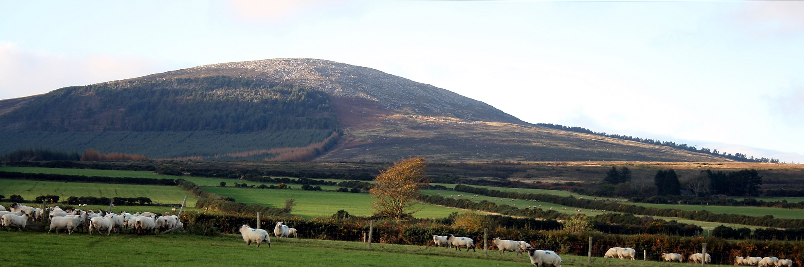
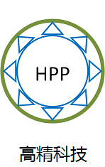
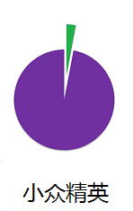

北大西洋 爱尔兰 Wexford郡
森林、湖泊和草原环抱的VEGUS农场
VEGUS农场主人崇尚简单和自然，追求毫无保留地展现了原生味道和营养的绿色食品。因为选择了小众，所以浓厚的爱心能够随每一小包的蔬菜原汁，抵达您的身边。
| 每一天起，做一个幸福的人；除草、种地，放马喂鸡；每一天起，关心粮食和蔬菜；这是一座农场，面朝大海，春暖花开。你还在羡慕追求这样的生活吗？在爱尔兰VEGUS农场，这样的日子已经过去了几个世纪，并且还将继续下去。 | 农场主人Michael Reynolds少年离乡，远去大西洋彼岸成家立业；却在繁华世界里初心不失，魂牵梦绕着爱尔兰家乡。二〇〇八年偕同老妻还乡后，醉心于制造能在常温下安全运输保存的鲜榨果蔬原汁。他的信条是"We care about what we do and everything has to be just perfect." | ||
|  | 自美国军方向民用市场释放出超高压低温灭菌技术后，大规模的鲜榨果蔬汁生产成为可能。然而对于技术的痴迷追求和对生产过程的严谨控制，VEGUS能够傲然独立，制造出可在常温下运输和保存的鲜榨果蔬汁；消除了运输保存过程中冷链的意外或人为中断可能导致的产品变质问题，因而能够将好的产品与全世界的人分享。 |  | 鲜榨果蔬汁市场迅猛发展，可口可乐也跻身其中。然而“一杯为品，二杯为饮，三杯止渴。若玉川之七碗风生，直莽夫尔。” VEGUS专注于对于健康有特别要求的小众人群，静心、精心、尽心地制作三种特别产品：西兰花嫩芽原汁、小麦草原汁、胡萝卜原汁。 |